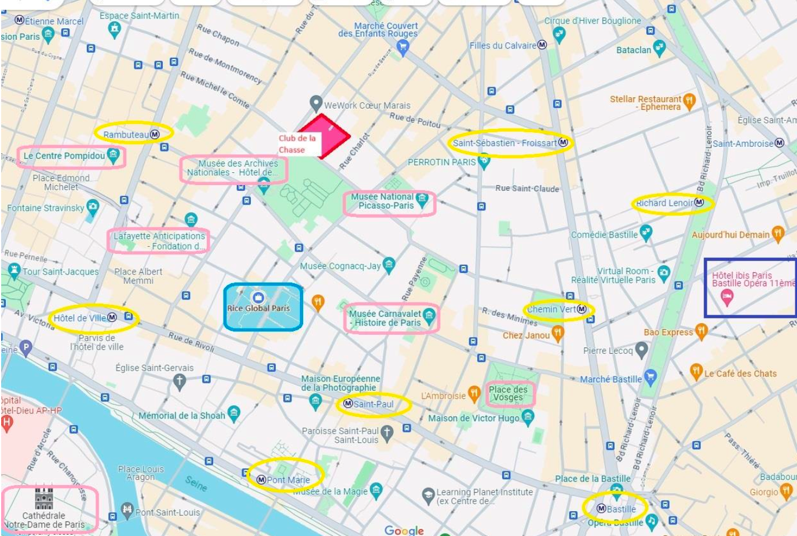

Travel information

Venues
Club de la Chasse
The talks will be happening at the Club de la Chasse, located at 60 Rue des Archives, 75003 Paris, a 7-minute walk from the Rice Global Paris Center. The entrance to the Club is through the red door. If the door is closed, simply use the bell. There is a permanently staffed security desk at the entrance. On the first day of the event you are attending, you will be met at the entrance and directed to the auditorium. The entrance to the venue is through the doorway shown below.
Rice Global Paris Center
We will hold a reception and poster sessions at the Rice Global Paris Center. The Center is located at 5 rue Sainte-Croix de la Bretonnerie, 75004 Paris, in the heart of the Marais district. The nearest metro stations are Hôtel de Ville and Saint-Paul, both on line 1. The Center is housed in a historical building set back from the street and has its own private courtyard and garden.
The Marais is a centrally located district of Paris that has preserved a dense urban fabric dating back to the 16th and 17th centuries. It is known for its concentration of elegant noble residences (hôtels particuliers), many of which have been transformed into museums and other public buildings (Musée Picasso, Musée des Archives Nationales, the Musée Carnavalet, the Hôtel de Sully, etc.) all within a short walking distance of the Center. Also within easy reach are numerous cutting-edge art galleries and exhibition spaces (Lafayette Anticipations, the Pompidou Center, the Galerie de l’architecture, the Gaîté Lyrique among others). Due to the historic nature of the area and the narrowness of the streets, we recommends prioritizing the use of public transportation and walking over taxis or Uber when navigating in Le Marais.
Hotel
We provide accommodation for our participants at the Ibis Paris Bastille Opéra 11ème, located at 15 rue Breguet, 75011 Paris, a 20-minute walk from the Club de la Chasse, or 21 minutes from the Rice Global Paris Center. All the hotel’s rooms can be used for single or double occupancy (by default, rooms are prepared with a double bed, but two single beds can be requested in advance). There is a small additional charge to the room booking if a second person is added to the room. Breakfast is included but is charged per person. In other words, if a second person is added to the room, this entails an extra charge for breakfast as well.
Arriving in Paris (Airports)
Three airports serve Paris:- Roissy-Charles-de-Gaulle: Most US flights operate from this airport.
- Orly Located south of Paris, primarily connecting to Europe and North Africa.
- Beauvais: Specializes in low-cost airlines, with an 80-minute commute to Paris via a bus service to Porte Maillot, on the western edge of the city.
- Taxi: To hire a taxi, follow the official taxi signs posted in the airport until you arrive at the taxi stand. You may encounter people trying to usher you into taxis prior to arriving at the taxi stand, but do not use these; they are likely scams that will overcharge you for their services. Even with long lines, you’ll get a taxi fairly quickly any time of day. Airport taxis operate using set prices (check here for the latest prices for Roissy and Orly).
- Uber: It is possible to get an Uber from the airport, however Uber does not have a dedicated pick-up point and the set rates for city taxis make them a more attractive option. See the Uber website for further instructions.
- Public transit: There are dedicated bus lines and suburban train options from Orly and Roissy. See the Paris transport authority (RATP) website for further details.